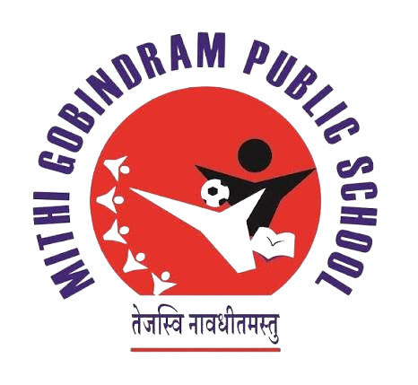

Hi, I'm Anshul Santlani
IIMB BBA DBE | Academic Assistant @ Makhija Academy | Business Finance
Professional Summary
Hi, I am Anshul, and I thrive on problem-solving. Currently pursuing a BBA DBE from IIM Bangalore, breaking down business cases, financial statements, and operational bottlenecks into clear, actionable decisions.
Alongside my degree, I work at Makhija Academy as an Academic Assistant, where I design quantitative mock tests, structure high-pressure problem sets, and write step-by-step analytical solutions for competitive exam aspirants every single day.
Exhausting? Maybe, but I crave MORE. I’m drawn to corporate finance and business strategy — specifically using numbers, statistics, and financial modeling to solve real managerial headaches. I believe there's always another puzzle worth solving.
Education
BBA in Digital Business & Entrepreneurship (Undergraduate)
Indian Institute of Management Bangalore

Higher Secondary Education (Class 12)
Mithi Gobindram Public School | CBSE
Score: 95.4%
Secondary Education (Class 10)
Mithi Gobindram Public School | CBSE
Score: 93.4%
Work Experience
Academic Assistant
(July 2026 – Present)
Makhija Academy | Content & Assessment Design
- Designed full-length quantitative mock test papers and structured step-by-step solutions for IPMAT aspirants.
- Developed yearly curriculum to ensure smooth operations and working of employees.
Leadership Roles
(1.5 years)
School Cabinet | Mithi Gobindram Public School
-
Elected Commerce Prefect (Class 12)
- Initiated and planned revision classes with professors.
- Assisted management in organizing major school events, including the Annual Function and Sports Day.
- Helped maintain discipline across the school.
-
Elected Vice Prefect in Planning and
Coordination (Class 11)
- Planned and organized the Intra-School Commerce Quiz.
- Coordinated logistics and scheduling for inter-house school activities.
Skills
Quantitative and Administrative Skills
- Quantitative Aptitude
- Academic Administration
- Assessment Design & Curriculum Planning
Technical Skills
- Working Knowledge of Microsoft Office
- Web Development Fundamentals (HTML5, CSS3)
Languages
- English: Full Professional Proficiency
- Hindi: Native / Bilingual Proficiency
- Sindhi: Elementary Comprehension (Spoken)